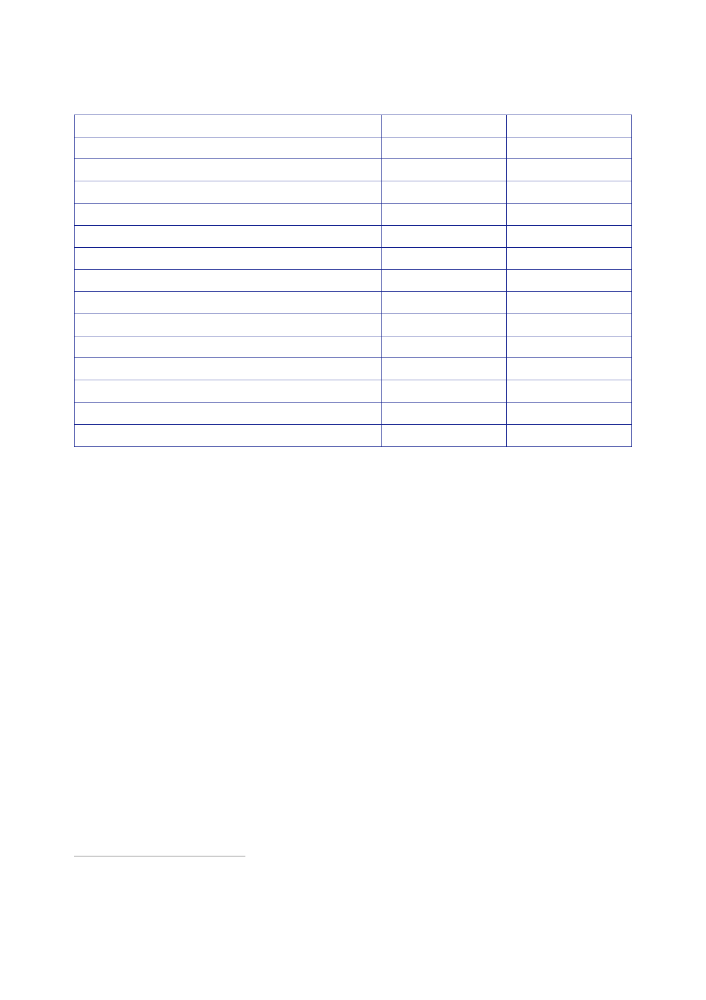

9.4 |
June 2005 to May 2006
Party
United
Iraqi Alliance
Kurdish
Alliance
Iraqi
Tawafuq (Consensus) Front
National
Iraqiya List
Iraqi Front
for National Dialogue (Hiwar)
Kurdish
Islamic Union
Al-Risaliyun
(Progressives)
Liberation
& Reconciliation Gathering
Iraqi
Turkmen Front
Al-Rafidain
(Assyrian Christians)
Mithal
Al-Alousi
Yezidi
Movement
Other
parties/invalid votes
TOTAL
%
votes
41.2%
21.7%
15.1%
8.0%
4.1%
1.3%
1.2%
1.1%
0.7%
0.4%
0.3%
0.2%
4.8%
–
Seats
won
128
53
44
25
11
5
2
3
1
1
1
1
0
275
525.
Visiting
Washington on 20 January, Sir Nigel Sheinwald told all of his
interlocutors
(from the
National Security Council, State Department and Department of
Defense) that
Mr Blair
placed importance on “seizing the opportunity presented by the
elections”.249
526.
That meant
moving quickly to form a genuine unity government, with
capacity
to make and
implement decisions. Sunni outreach should continue, and the
new
government
should make “an early, comprehensive statement of their
programme”.
That would
set the context for a “conditions-based drawdown of forces in
MND(SE)”.
527.
Diplomatic
reporting from Baghdad in early 2006 was heavily focused on
the
formation
of a new government. As the reports contained accounts of private
discussions
with
individual politicians, many of whom remain active in Iraqi
politics, the Inquiry will
not give a
detailed description of them.
528.
Mr Asquith
told the Inquiry that after the election “there was a series of
visits from
the Foreign
Secretary, and from senior officials to Iraq, to Baghdad, to try
and persuade
the
politicians, the Iraqi politicians, to come to
agreement”.250
249
Letter
Phillipson to Hayes, 21 January 2006, ‘Nigel Sheinwald’s talks in
Washington, 20 January:
Middle East
issues and Afghanistan’.
250
Private
hearing, 15 June 2010, page 21.
577